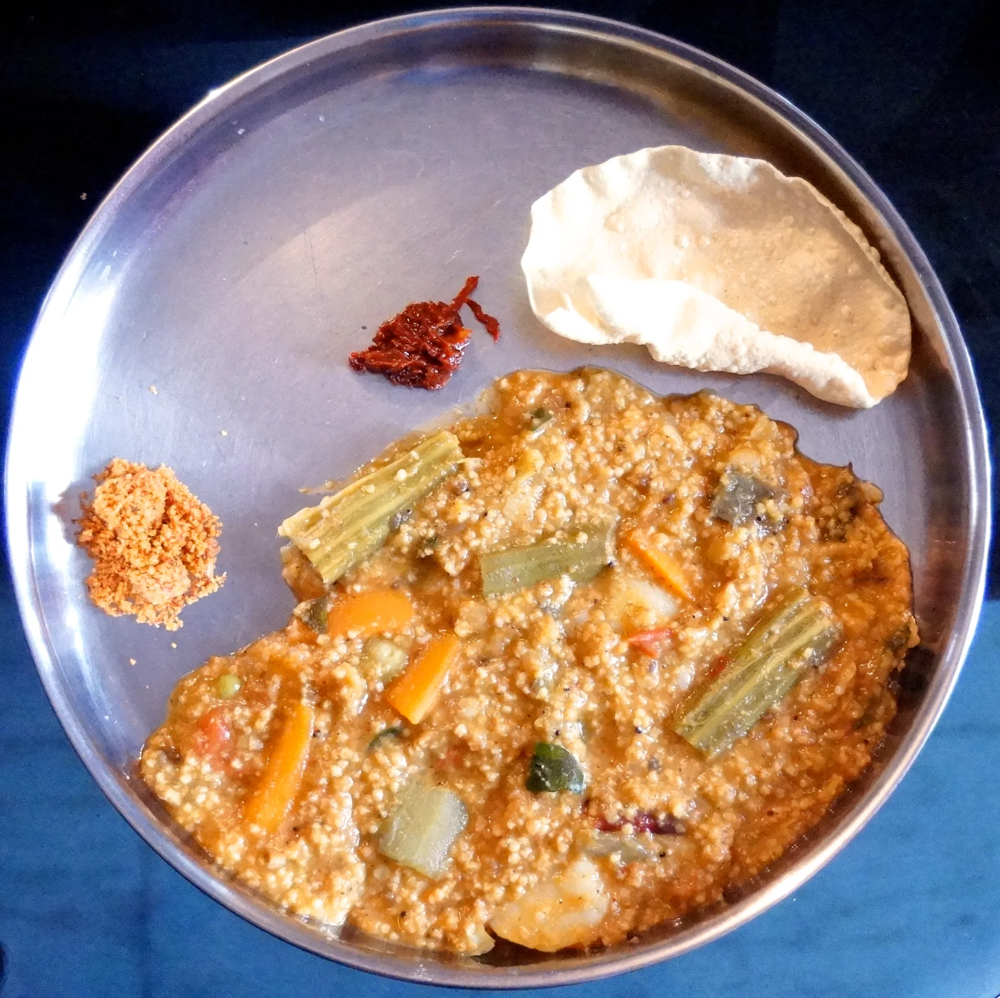

SPICY DISHES with Millet Zone
'Siri Dhanya' millet
BISI BELE BATH with
KODO MILLET/Arikelu
Ingredients:
- 1 cup of Kodo millet
- 3/4 cup of Tur dal/Pigeon pea
- 1/2 cup of Tamrind - thick Juice
- VEGETABLES :
- Bottle Gourd
- Peas
- Beans
- Caspicum
- Potato
- Carrot
- Long Brinjal
- Drumsticks
- Tomato (To prepare Tomato Puree only)
- MASALA:
- 1 tablespoon Chana dal/chick pea
- 1 table spoon Urad dal/Blackgram (dehusked)
- 1 table spoon Dhaniya/ Coriander seeds
- Pepper seeds
- Grated Dry cocnut
- Red chilli's according to taste (5-6)
- Salt as needed
- Cinnamon Stick (1-2)
- Mace (1-2)
TADKA ::
1 Tbs Jeera/Cumin
1 Tbs Rai/Mustard seeds
Dry Red Chilli pieces 4-5
1 Tbs Turmeric powder
Curry Leaves 15
Method:
- The ingredients listed in MASALA should be fried in oil for about 5-8 minutes (until the Masala turns Golden-Brown)
- The tomato's should be fried for about 5 minutes in a wok and should be grinded separately.
- Wash 1 cup of Kodo millet and soak the 'grains' for 30 minutes. After 30 minutes, cook the Grains in pressure cook for 3 whistles.
- SEMI COOK the Tur dal/Pigeon pea in a pressure cooker (1-2 Whistle's)
- Cut all the vegetables and semi-boil them in a vessel with a lid on. (Not in pressure cooker)
- After the vegetables are semi-boiled, add the SEMI COOKED Tur dal/Pigeon Pea and Kodo millet And mix well and boil more.
- After 5 minutes, add the grinded Masala paste and Tomato puree. Make sure to mix very well and ensure that no clumps are formed.
- Add salt according to taste for the full contents.
- Next, add half cup of Tamrind Juice and mix well.
- Add TADKA to the whole lot and mix well.
- Bisibele bath is ready !!
NOTE: This dish can be made with Foxtail millet, Browntop millet too.
Source: Original Millets Zone · Millet bisi bele bath
Content captured 25 October 2026. Reorganized for reading; purchase-related material excluded.
Content captured 25 October 2026. Reorganized for reading; purchase-related material excluded.